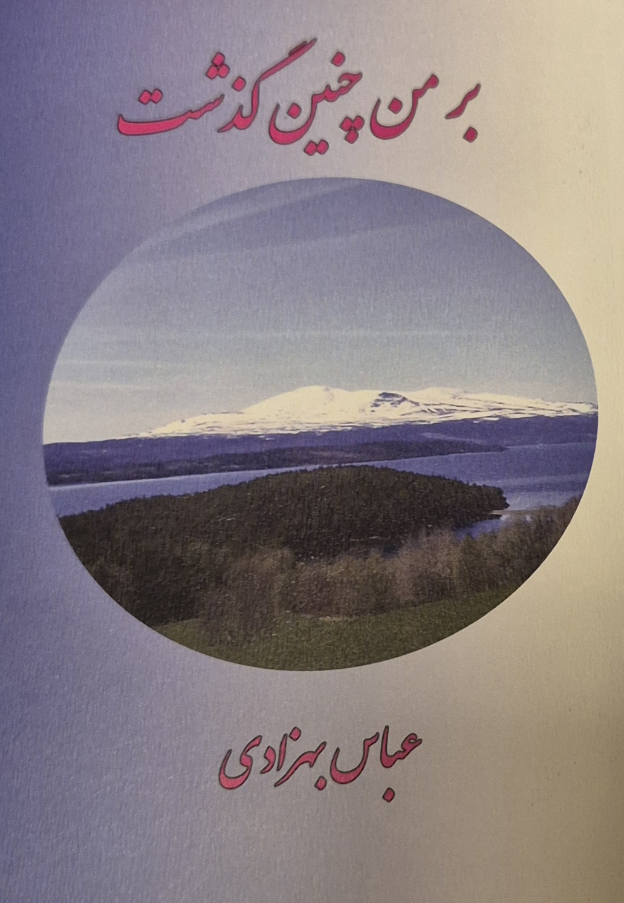

بر من چنین گذشت
«بر من چنین گذشت» روایت زندگی مردی است که از زندانهای دههی شصت جمهوری اسلامی تا تبعید، پناهجویی و بلاتکلیفی در اروپا پیش رفت. او از ایران گریخت، در پاکستان و هلند سالهای سختی را گذراند و سرانجام در سوئد پناهندگی سیاسی گرفت. اما زندگی تازه نیز برای او به آرامش نرسید؛ بحرانهای خانوادگی، فشارهای روانی و حادثهای تراژیک مسیر زندگیاش را برای همیشه تغییر داد. این کتاب روایتی تلخ و صریح از تبعید، فروپاشی، گناه، مجازات و زندگی در حاشیهی قانون و جامعه است.
کتابها
اینجا دو نسخه / عنوان موجود از این اثر را میتوانید ببینید و تهیه کنید.

درباره کتاب
این کتاب دربارهی زندگی یک تبعیدی است که پس از تجربهی زندانهای دههی شصت جمهوری اسلامی، ناچار به ترک ایران شد. او نخست به پاکستان گریخت و پس از تولد نخستین فرزندش به هلند پناه برد؛ جایی که سه سال دشوار را با پاسخهای منفی، مشکلات مالی، تنهایی و برخورد با فرهنگی ناآشنا گذراند. پس از ناامیدی از روند پناهندگی در هلند، راهی سوئد شد و در مدت کوتاهی پناهندگی سیاسی گرفت.
در سوئد، او کوشید زندگی تازهای بسازد: به مدرسهی آشپزی رفت، مدرک گرفت و همزمان فعالیتهای سیاسی خود را ادامه داد. اما زندگی خانوادگیاش در پی مجموعهای از بحرانها و دخالتهایی که او آنها را نقشهای پیچیده از سوی دو برادر پناهندهنما میداند، فرو پاشید. این فروپاشی او را به بحرانهای شدید روحی و روانی کشاند و سرانجام به حادثهای تراژیک انجامید: قتل مادر فرزندانش، محکومیت به زندانی طولانی و حکم اخراج دائم از سوئد.
با این حال، به دلیل نداشتن گذرنامه یا مدارک هویتی ایرانی، اجرای حکم اخراج ممکن نشد. او اکنون بیش از دو دهه است که در سوئد در وضعیت بلاتکلیف زندگی میکند؛ بیآنکه امکان عادی کار و فعالیت داشته باشد. «بر من چنین گذشت» تلاشی است برای بازگویی این مسیر دشوار، با همهی زخمها، خطاها، رنجها و پیامدهای انسانی آن.
فارسی
تبعید، پناهندگی و سرگذشت فردی
ارسال از طریق Publit
بخشی از کتاب
تا آن زمان، حکم اخراج را از خودآگاه خود رانده و در گوشهای از ناخودآگاه پنهان کرده بودم تا از شدت احساس کشندهی آن بکاهـم. اما اکنون که در بازداشتگاه به سر میبردم، هر لحظه به اخراج فکر میکردم. یاد زندانهای جمهوری اسلامی و پاسداران در ذهنم زنده میشد و در روحم غوغایی برمیخاست.
حالم چنان خراب شده بود که مأموران بازداشتگاه نگران سلامتیام شدند. گمان میکردند ممکن است خودکشی کنم؛ برای همین حتی برس توالت سلول را هم برداشته بودند. شبانهروز از پنجرهی کوچک روی درِ سلول مرا زیر نظر داشتند و هر چند دقیقه یک بار به داخل نگاه میکردند. داروهای اعصابم را نیز به میزان قابل توجهی افزایش داده بودند.
کتابهای دیگر
در این بخش میتوانید کتابهای دیگر عباس بهزادی را ببینید. این قسمت بهتدریج با معرفی، تصویر جلد و لینک خرید کتابهای دیگر تکمیل خواهد شد.
تماس
برای تماس با نویسنده میتوانید از این نشانی ایمیل استفاده کنید: